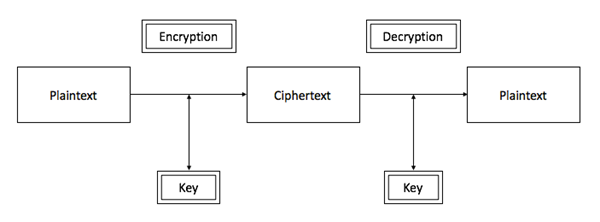
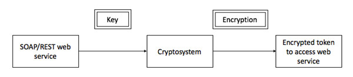
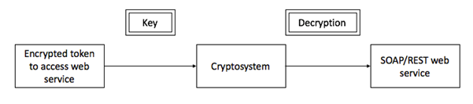

This document discusses the approach or methodology for the cryptosystem library that could be utilised by web applications, web services, REST based web service, file transfer for encryption and decryption. This proposed cryptosystem offers the following built-in features:
· Authentication – Using this cryptosystem, the identity of the remote system or application can be established. For example, SSL certificate of a web server providing proof of the identity of the remote system.
· Non-repudiation – This concept implies that the receiver cannot deny his actions. The digital signature in cryptography ensures non-repudiation. For example, in a transaction based application a user could deny performing a transaction and demands a refund. Using digital signature, non-repudiation can be ensured.
· Confidentiality – This is the key function of the proposed cryptosystem. The data or information passed through this cryptosystem is ensured to be private and assure that only users or application who have access to the appropriate key will get access to the data.
· Integrity - This feature prevents the unauthorized modification of the data in transit or at rest. The cryptosystem must use a industry recommended hashing algorithm to provide integrity service.
Cryptosystem
A Cryptosystem refers to a library that provides both encryption and decryption functionality. The key generation is left out to the individual system or application that is using this cryptosystem. This is mainly due to the ease of use for key management, provide better security and flexibility to use this cryptosystem. The security of the key completely relies on the system or application that is using the cryptosystem. The best practices and approaches to securing a key is discussed below in this document.
The cryptosystem performs the basic function as below:

The cryptosystem would accept the plaintext in a particular format, perform cryptographic operations along with Key on the plaintext and outputs a ciphertext. This process is called Encryption. The reverse process to convert ciphertext to plaintext is called Decryption. The above cryptosystem displays a symmetric cryptosystem that uses same key for encryption and decryption. The characteristics of strong symmetric consists of:
· Key sizes of 128 bits for most applications
· Key sized of 168 or 256 bits for critical applications such as large financial transactions
Web Service with cryptosystem
The below diagram illustrates the flow of cryptosystem when web service want to utilize the functions. The input to the cryptosystem is the web service call attached to a key over HTTPS. The web service call goes through the cryptosystem functions and outputs a encrypted token to access web service. This token is appended for each web service call and would be verified at the consumer end on the server side. If the token mismatches, the web service call is rejected.

At the consumer end, the same key will be used to decrypt and validate the web service call. This flow offers below features:
-
Confidentiality – Only key at the sender and receiver end could decrypt the web service call
-
Non-repudiation – The cryptosystem digitally signs each web service call
-
Integrity – The token value detects if message has been tampered or not

Key Storage
As discussed earlier, cryptosystem relies on keys to assure a system identity, provide confidentiality, integrity and non-repudiation. It is important that the keys are adequately protected. Should a key be compromised, it is no longer be trusted. The key storage should have following characteristics:
· Keys should be protected as much as is possible with file system permissions. They should be read only and only the application or system directly accessing them should have these rights.
· Host based intrusion systems should be deployed to monitor access of keys.
· Passphrases should be used to protect the keys
· Storage of keys within source code or binaries should be avoided
· Minimize the functionality of the system and application requiring access to the key